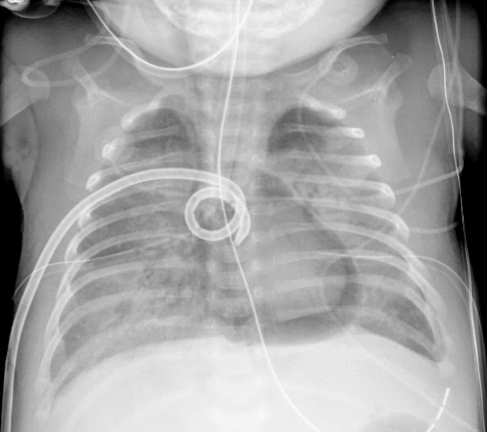
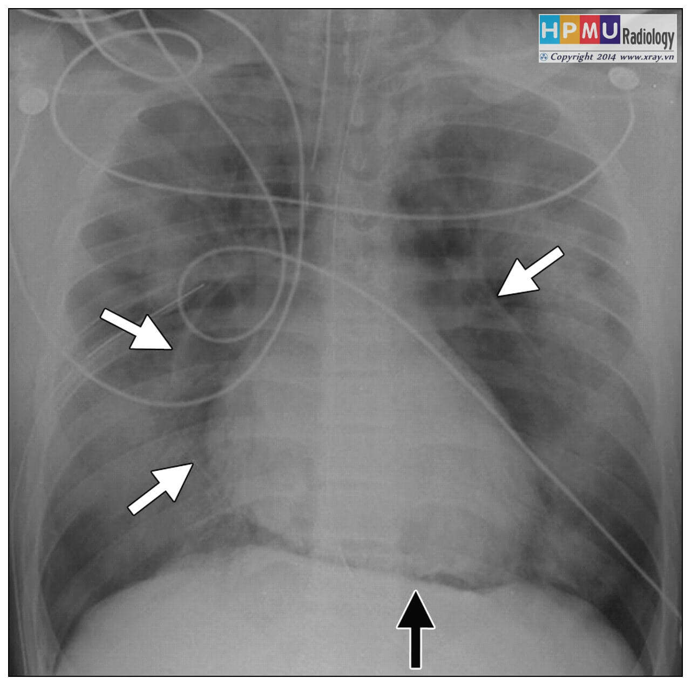
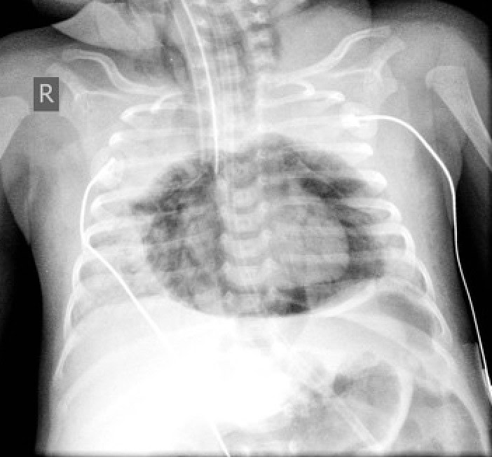
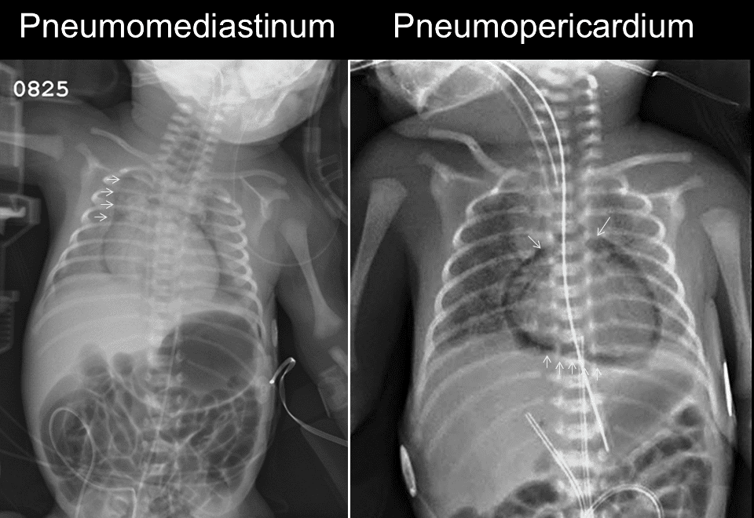
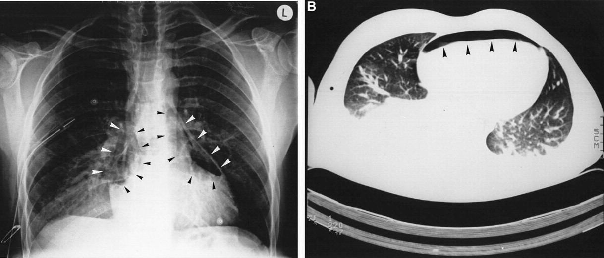

Tràn Khí Màng Tim
I. Đại cương
– Tràn khí màng tim (pneumopericardium) là tình trạng có khí tự do trong khoang màng ngoài tim.
– Dịch tễ: Đây là tình trạng hiếm gặp, thường liên quan đến chấn thương, can thiệp hoặc phẫu thuật tim-ngực, và thông khí áp lực dương.
– Căn nguyên:
+ Thông khí áp lực dương, có thể gây tổn thương do áp lực.
+ Nhiễm trùng sinh khí trong khoang màng ngoài tim.
+ Rò bất thường giữa màng ngoài tim với thực quản, dạ dày hoặc phế quản.
+ Chấn thương ngực gây tổn thương tim hoặc màng ngoài tim.
+ Phẫu thuật hoặc thủ thuật tim-ngực, như phẫu thuật tim, chọc dò hay dẫn lưu màng ngoài tim.
– Cơ chế bệnh sinh:
+ Khí có thể vào khoang màng ngoài tim trực tiếp qua tổn thương hoặc đường rò; trong barotrauma, khí từ phế nang có thể lan theo mô kẽ đến trung thất rồi vào khoang màng ngoài tim.
+ Khi khí tiếp tục tích tụ mà không thoát được, áp lực trong khoang màng ngoài tim tăng, hạn chế đổ đầy tâm trương và có thể gây chèn ép tim.
– Biểu hiện lâm sàng:
+ Người bệnh có thể không triệu chứng hoặc biểu hiện khó thở, đau ngực.
+ Thể tăng áp lực có thể gây tụt huyết áp, sốc tắc nghẽn, ngừng tim và tử vong.
– Phân bố: Khí có thể khu trú trong khoang màng ngoài tim hoặc phối hợp với tràn khí trung thất, tràn khí màng phổi hay các khoang khác tùy căn nguyên.
– Vai trò CĐHA: X-quang ngực có thể phát hiện khí quanh bóng tim; CT giúp xác định vị trí khí, đánh giá mức độ lan rộng và tìm tổn thương phối hợp hoặc nguyên nhân. Khi có dấu hiệu chèn ép tim trên lâm sàng, không trì hoãn xử trí để chờ chẩn đoán hình ảnh.


© Chẩn Đoán Hình Ảnh Xray.vn
II. Hình ảnh x-quang
– Đặc điểm hình ảnh:
+ Trên phim ngực thẳng, khí trong khoang màng ngoài tim tạo dải tăng thấu quang hình liềm bao quanh một phần hoặc toàn bộ bóng tim; khi lượng khí nhiều, dải này có thể tạo thành viền liên tục, tách rõ bờ tim khỏi nhu mô phổi.
+ Khí thường khu trú quanh tim và dừng ở mức các cuống mạch lớn; dấu hiệu này giúp định khu khí trong khoang màng ngoài tim.
– Cơ chế tạo hình ảnh: Đường viền màng ngoài tim trở nên nhìn thấy được do tương phản giữa khí trong khoang màng ngoài tim và nhu mô phổi chứa khí bên ngoài; đường viền thường mảnh, liên tục và cong theo bờ tim.
– Cạm bẫy:
+ Lượng khí ít có thể chỉ tạo viền sáng khu trú hoặc khó nhận thấy do chồng lấp với bóng tim và trung thất, nhất là trên phim di động tư thế nằm; không thấy viền khí không loại trừ tràn khí màng tim.
+ Khí lan vượt lên trên mức cuống mạch lớn hoặc chạy dọc các cấu trúc trung thất gợi ý tràn khí trung thất phối hợp; hai tình trạng có thể đồng thời hiện diện nên phim X-quang đôi khi không xác định chắc chắn khoang chứa khí.


– Dấu hiệu cơ hoành liên tục (continuous diaphragm sign):
+ Trên phim ngực thẳng, khí nằm giữa tim và mặt trên cơ hoành làm bờ cơ hoành hiện liên tục qua vùng thường bị bóng tim che khuất; trên phim nghiêng đứng, khí có thể viền rõ phần trước của vòm hoành trái.
+ Dấu hiệu này có thể gặp trong tràn khí màng tim nhưng không đặc hiệu, thường gợi ý tràn khí trung thất hơn; hai tình trạng có thể đồng thời, nên không dùng dấu hiệu đơn độc để định khu khí.


– Dấu hiệu tim nhỏ (small heart sign):
+ Đây là dấu hiệu hiếm gặp nhưng quan trọng trên X-quang ngực, biểu hiện bằng sự giảm đột ngột kích thước bóng tim do chèn ép tim thứ phát bởi tràn khí màng tim tăng áp lực hoặc tràn khí trung thất tăng áp lực.
+ Mức giảm đột ngột > 2 cm đường kính ngang bóng tim được xem là dấu hiệu rất gợi ý chèn ép tim.
+ Để đo chính xác, cần có sẵn phim X-quang gần đây trước đó với điều kiện chụp tương đương để so sánh. Tuy vậy, dấu hiệu này vẫn hữu ích khi theo dõi tràn khí màng tim hoặc tràn khí trung thất đã biết, giúp nhận diện sớm khi tình trạng tiến triển thành thể tăng áp lực.
+ Cần phân biệt dấu hiệu tim nhỏ với hội chứng tim nhỏ, đặc trưng bởi tỷ số tim-ngực giảm bất thường.


III. Hình ảnh CLVT
– Đặc điểm hình ảnh:
+ Khí trong khoang màng ngoài tim có đậm độ rất thấp, nằm giữa lá thành và lá tạng màng tim; trên mặt phẳng ngang, thường hiện thành dải hoặc các túi khí ôm sát bờ tim, có thể bao quanh một phần hoặc toàn bộ tim.
+ Màng ngoài tim có thể hiện thành đường mảnh bao quanh dải khí. Khí trong khoang này thường bị giới hạn bởi các chỗ phản chiếu màng ngoài tim ở gốc các mạch máu lớn; dựng hình đa mặt phẳng giúp theo dõi ranh giới và mức độ lan rộng.
– Phân biệt:
+ Tràn khí màng ngoài tim thường tạo một dải khí rộng, trơn láng, chạy sát và ôm theo bờ tim, kết thúc ở mức gốc các mạch máu lớn. Tràn khí trung thất thường tạo nhiều dải khí mảnh dọc khí quản, phế quản, thực quản hoặc mạch máu, có thể lan lên trung thất trên và cổ; hai tình trạng có thể đồng thời hiện diện.
– Đánh giá tổn thương phối hợp: CLVT giúp phát hiện khí trung thất, tràn khí màng phổi, khí dưới da và tổn thương có thể là nguyên nhân như chấn thương hoặc đường rò với cấu trúc lân cận.
– Cạm bẫy:
+ Màng ngoài tim rất mỏng và có thể không nhìn rõ ở một số đoạn, nhất là quanh thất trái; không dùng riêng việc không thấy đường viền màng tim để loại trừ tràn khí màng tim.
+ Túi màng ngoài tim căng hoặc buồng tim bị ép làm tăng nghi ngờ tràn khí màng tim tăng áp lực. Cần đối chiếu khẩn với tình trạng huyết động; không trì hoãn xử trí khi nghi ngờ chèn ép tim trên lâm sàng.


=> Case lâm sàng 1:


IV. Chẩn đoán phân biệt
* Tràn khí trung thất
– Tràn khí màng tim (pneumopericardium) thường tạo một dải thấu quang rộng, trơn láng, ôm theo bờ tim và bị giới hạn ở mức phản chiếu màng tim tại gốc các mạch máu lớn.
– Tràn khí trung thất thường tạo nhiều dải thấu quang mảnh, không đều, chạy dọc hoặc viền quanh khí quản, phế quản, thực quản và các mạch máu; khí có thể lan lên trung thất trên hoặc cổ.
– Hai tình trạng có thể đồng thời hiện diện; vì vậy, dấu hiệu khí vượt lên trên giới hạn màng tim gợi ý thành phần tràn khí trung thất nhưng không loại trừ tràn khí màng tim phối hợp.


– Phân biệt:
+ Khí tự do trong khoang màng tim có xu hướng dồn về phần cao: khi người bệnh đứng, khí thường tụ ở phần trên của túi màng tim; khi nằm ngửa, khí có xu hướng phân bố ra phía trước.
+ Vì vậy, dải khí quanh tim có thể đổi vị trí trên các phim chụp ở tư thế khác nhau. Khí trung thất thường bị giữ dọc các khoang mô liên kết nên ít thay đổi vị trí rõ rệt trong thời gian ngắn.
+ Đây chỉ là dấu hiệu gợi ý; lượng khí ít hoặc khí khu trú có thể làm sự dịch chuyển khó nhận thấy, và hai tình trạng có thể đồng thời hiện diện.


V. Tiên lượng & Điều trị
– Tiên lượng:
+ Tiên lượng phụ thuộc vào mức độ tích tụ khí, tình trạng huyết động và căn nguyên. Thể không tăng áp lực, không gây chèn ép tim có thể ổn định và tự hấp thu khi nguyên nhân được kiểm soát.
+ Thể tăng áp lực có thể hạn chế đổ đầy tim, gây chèn ép tim, sốc tắc nghẽn, ngừng tim và tử vong; tổn thương tim, mạch máu hoặc các chấn thương phối hợp cũng ảnh hưởng đáng kể đến tiên lượng.
– Điều trị:
+ Khi huyết động ổn định và không có chèn ép tim: theo dõi sát lâm sàng, huyết động và diễn tiến hình ảnh; đánh giá lặp lại bằng siêu âm tim khi phù hợp. Không chỉ định can thiệp xâm lấn chỉ dựa trên sự hiện diện của khí nếu chưa có chỉ định lâm sàng khác.
+ Khi có dấu hiệu tràn khí màng tim tăng áp lực hoặc suy giảm huyết động: giải áp khoang màng ngoài tim khẩn cấp bằng chọc tháo hoặc dẫn lưu phẫu thuật, tùy tình huống và nguồn lực chuyên môn; không trì hoãn xử trí khi nghi ngờ chèn ép tim.
+ Đồng thời xử trí căn nguyên và tổn thương phối hợp: kiểm soát nhiễm trùng, xử trí đường rò hoặc tổn thương tim-màng tim, điều chỉnh thông khí áp lực dương khi phù hợp và điều trị tràn khí màng phổi nếu có.
Tài liệu tham khảo
* Pneumopericardium and Pneumomediastinum After Implantation of a Cardiac Resynchronization Pacemaker – Peregrine G. Green, MA(Oxon), BM BCh and Neil Herring, MA(Oxon), BM BCh, DPhil
* Tension Pneumopericardium: Case Report – Patrick Macgoey, Markus Schamm, Elias Degiannis
* Spontaneous pneumopericardium an unusual complication in a patient of HIV and pulmonary tuberculosis – Vishal Chopra, Nishi Garg and Parul Mrigpuri
* A Rare Case of Pneumopericardium in the Setting of Tuberculous Constrictive Pericarditis – Lauro L. Abrahan IV, Stephanie Martha O. Obillos, Jaime Alfonso M. Aherrera
* Cancer-Related Pneumopericardium: A Case Report and Literature Review – Hirani S.a · Velez Martinez C.S.a · Patan S.b · Kavanaugh M
* An Extremely Rare Combination: Pneumopericardium, Pneumoperitoneum, and Subcutanous Emphysema—A Case Report – Melek Zekiye Uluçam